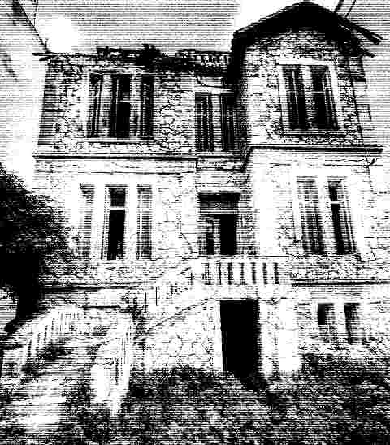

The Tower of Dreams: A Haunted Mansion

An abandoned, three-story stone mansion on Smolensky Street is shrouded in dark legends. Known as the Tower of Dreams or the Black Wolf’s House, it is said to be haunted by the ghost of its last owner, who still wanders its empty rooms, whispering: “Stay away from the tower! It’s mine!” Built in the 19th century, the 372-square-metre mansion once belonged to the wealthy Kourtalis family. Its final owner, Kyriakos Kourtalis, reportedly dreamed of power and prestige, though some claim his true ambition was to become an opera singer—a dream his father forbade. Neighbours recall him singing arias from the balcony, dressed in a shabby hat and bow tie. In his final years, he allegedly lost his fortune, descended into madness and died in isolation under mysterious circumstances. Today, stories of strange electromagnetic activity and ghostly sightings continue to surround the crumbling mansion, keeping its dark history alive.